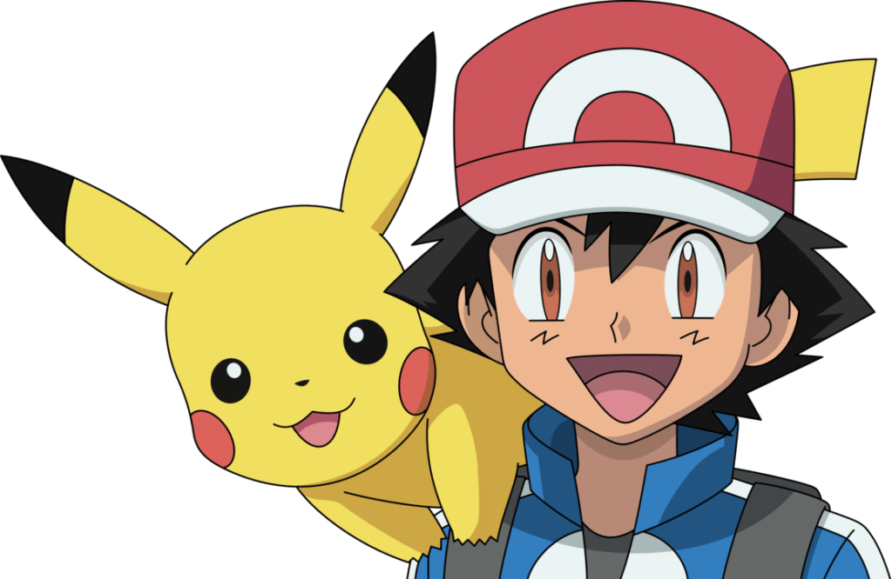

Akinator és un joc molt conegut entre els joves, l'original tracta d'un geni que ha d'endevinar el personatge públic en qui estiguis pensant. Aquests personatges públics solien ser youtubers, escriptors o qualsevol personatge famós… El nostre joc tracta de més o menys el mateix, però el tema hi serà una mica diferent, aquest tractarà de pokémons.
El seu funcionament és senzill, tenim 40 pokémons, i 4 entrenadors, primerament escolliràs un entrenador que ens representarà en el joc, una vegada tinguem l'entrenador, escollirem mentalment un pokémon, i anirem responent les preguntes per tal que el nostre entrenador pugui endevinar el pokémon que hem pensat.
